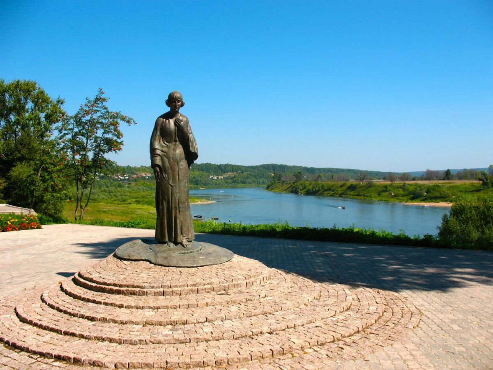

Сканди-мероприятия
-
SCANDI-ЭКСКУРСИЯ В ТАРУСУ (Калужская область)
12 августа 2023г
Таруса — маленький городок Калужской области в излучине Оки. Не приедь сюда на дачу Цветаевы или не поселись в округе Поленовы, она так бы и осталась неизвестной деревенькой, о существовании которой вряд ли бы кто знал.
Еще с давних пор Тарусу населяли ремесленники, занимавшиеся керамикой и вышивкой, промышленности в городе никогда не было. Простоту и размеренность жизни, необходимую для творчества, выразительные пейзажи холмистых берегов, уходящих вдаль лугов и лесов в свое время оценили Иосиф Бродский, Константин Паустовский, Николай Заболоцкий. Приезжали Александр Солженицын и Булат Окуджава. И это не весь список. Таруса появилась в художественных красках и поэтических строках десятков произведений, стала замечательным местом съемок не одного фильма.
Наш замечательный гид Василий Злотников проведёт нас пешеходным маршрутом почти 10 км с интереснейшей экскурсией. Располагайте временем программа займёт целый день.
Что мы увидим?
📍Музей Цветаевых и Паустовского
📍Краеведческий музей
📍Часовню на старом кладбище
📍Дом Ракицкого и мастерсткую Штейнберга
📍Церковь Воскресения
📍Дом Виноградова
📍В хорошую погоду остановимся на песчаном пляже
Предусмотрен заход и осмотр экспозиции в некоторых музеях. Остановимся на обед в стильном кафе Тарусское время.
Как добраться?
Автомобилистам удобно доехать до автостанции Таруса. Ориентировочное время встречи 11.00 На общественном транспорте добираемся группой под руководством инструктора. Едем на электричке от Курского вокзала в 7.22 до Серпухова (электричка Румянцево - Серпухов). В Серпухове в 9.50 садимся на маршрутку 245 и едем до автостанции Таруса. Обратно ориентировочно маршрутка из Тарусы в 17.25 или 18.10. Электричка из Серпухова в 18.30 или 19.39
Стоимость: 2200р регистрация до 10 августа 2023г.
Дополнительно оплачивается обед в кафе Тарусское время. Ориентировочно 1000р
ЗаписатьсяПодробнее -
SCANDI-фестиваль на Лопатинских карьерах
20 августа 2023г
Маршрут замечателен, прежде всего, красивыми объектами, созданными в сотрудничестве человека и природы на обширной территории Лопатинского фосфоритного рудника – рекультивированных фосфоритных карьеров к востоку от Воскресенска. Лопатинский рудник – крупнейшее в Европе месторождение фосфоритов, используемых для производства минеральных удобрений.
Первые разработки начались в 1930-х гг., а наиболее активная добыча – в 1960-х. На карьерах до недавнего работали огромные монстры – абзетцеры (многоковшовые экскаваторы). Сейчас экскаватора уже нет, но с точки зрения пешеходной нагрузки и визуальной картинки - маршрут очень интересный.
Что нас ждёт?
Новый пешеходный маршрут на 20 км. Идти будем в 3 этапа. На каждом этапе к нам будут присоединяться местные жители, которые хотят познакомиться со Скандинавской ходьбой. Предусмотрены остановки на чаепитие из самовара , упражнения с палками, стрейчинг.При хорошей погоде искупаемся в озёрах Лопатинских карьеров. На финише пикник для всех.
Точка старта и финиша разная, поэтому добираться лучше общественным транспортом или оставить машину у платформы 88-й километр.
Как добраться?
Едем на экспрессе Рязань-1 от Казанского вокзала отправление в 8.30 до платформы 88-й километр. От плаформы отправляемся на такси до точки старта в селе Ёлкино. Обрато от точки финиша в районе Березовского пруда отправляемся на такси до платформы 88-й километр. В 18.10 экспресс Рязань-1 до Казанского вокзала.
Наш гид и главный массовик-затейник мероприятия - Константин Братчиков
Инструктор - Волосюк Маргарита
Стоимость: 1000 регистрация до 18 августа 2023г.
Дополнительно оплачивпется трансфер на такси от станции до точки старта и обратно, чаепитие, перекус на финише. Ориентировочно 1000 р.
Записаться Подробнее
Подробнее